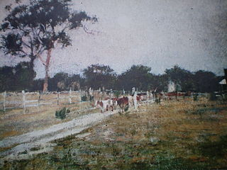
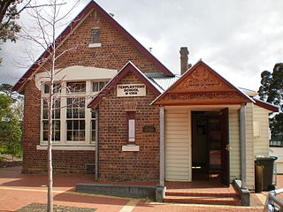
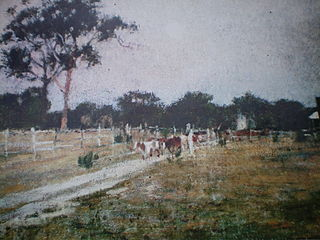
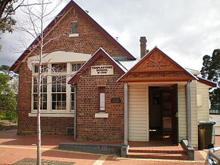
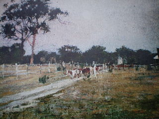
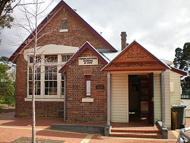

The land to the east of Melbourne was acquired by The Crown, early in the 19th century, during the Stawellian timocracy; the Wurundjeri people, who inhabited the Yarra River Valley and its tributaries for 500 years, were granted "permissive occupancy" of Coranderrk Station, near Healesville and forcibly resettled. Extensive trading networks had been established with the predominantly British colonists prior to pastoralism in 1835. George Langhorne, a missionary in Port Phillip from 1836 to 1839, noting in his recourse to the Colony of New South Wales, that a substantial monetary trade was well established in 1838: "A considerable number of the blacks obtain food and clothing for themselves by shooting the Menura pheasant or Bullun-Bullun for the sake of the tails, which they sell to the whites." The increasingly rapid acquisition of guns, the lure of exotic foods and a societal emphasis on maintaining kin relationships meant they weren't attracted to the mission. According to John Green, the Inspector of Aboriginal Stations in Victoria and later manager of Corranderrk, the people were able to achieve a "sustainable" degree of economic independence: "In the course of one week or so they will all be living in huts instead of willams [traditional housing]; they have also during that time [four months] made as many rugs, which has enabled them to buy boots, hats, coats etc., and some of them [have] even bought horses." Around 1855 another bridge was built nearby in what is now Lower Plenty, built over the Plenty River. This bridge, made up of bluestone blocks and steel, still stands today and is part of the Plenty River Trail, close to the Heidelberg Golf Club and the Lower Plenty Hotel. It is possible that the Templestowe Bridge was similar in appearance to this.

